Noven Energy
Elektrik Elektronik Teknisyeni
Sahada ariza veren cihazlarda tespit, analiz, kart seviyesinde onarim ve komponent degisimi islemleri yurutuyorum. Guc besleme ve haberlesme hatlarinin olcum-kontrol sureclerinde gorev aliyorum.
Elektronik Uretim | Ariza Analizi | PCB
Elektrik-elektronik teknisyeniyim. Saha ariza analizi, kart seviyesinde onarim, THT/SMD lehimleme ve guc elektronigi uygulamalarinda aktif calisiyorum.
Elektrik Elektronik Teknisyeni
Sahada ariza veren cihazlarda tespit, analiz, kart seviyesinde onarim ve komponent degisimi islemleri yurutuyorum. Guc besleme ve haberlesme hatlarinin olcum-kontrol sureclerinde gorev aliyorum.
Kalite Kontrol Teknisyeni
PCB'lerin IPC standartlarina uygunluk kontrolu, lehim kalitesi denetimi, multimetre ile fonksiyonel test ve hatali kart analizi sureclerini yonettim.
THT Montaj Teknisyeni
THT bilesen montaji ve lehimleme operasyonlarini teknik standartlara uygun sekilde surdurdum.
THT/SMD lehimleme, devre testleri, hata ayiklama, kalite kontrol.
Arduino, ESP32, batarya paketleme, ESC ve motor surucu calismalari.
Osiloskop, multimetre, LCR metre, guc kaynagi, sicak hava istasyonu.
KiCad, Arduino IDE, STM32CubeIDE, Blender. RS232/RS485 pratik deneyim.
Guc Elektronigi
IRFZ44N MOSFET ve Arduino Nano ile kontrol edilen, 3S 25A batarya ile calisan ESC prototipi.
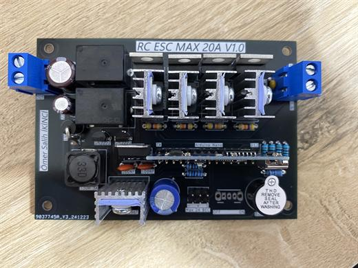
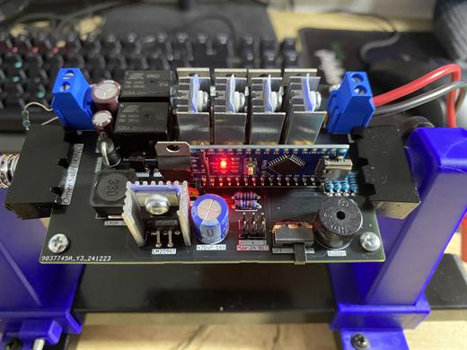
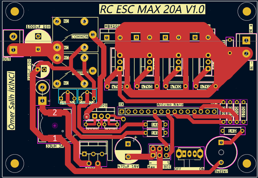
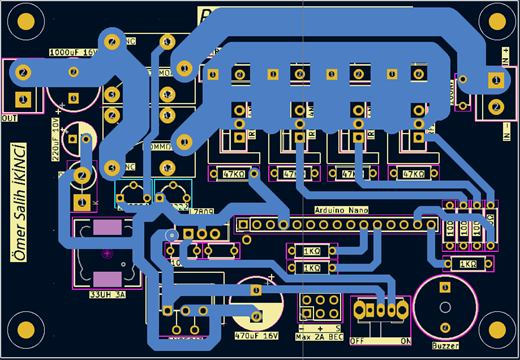
Test Ekipmanlari
100W (20V 5A) yari analog/yari dijital kor yuk tasarimi. Hizli ADC okumasi, MOSFET SOA dikkati ve cikis koruma katinda LM74700 kullanimi.
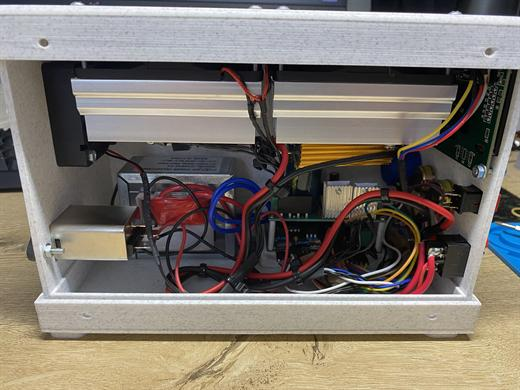
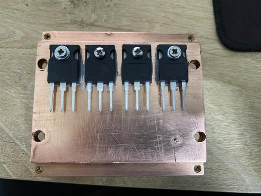
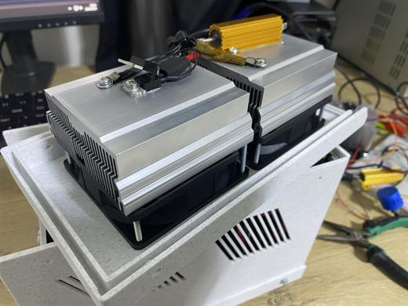
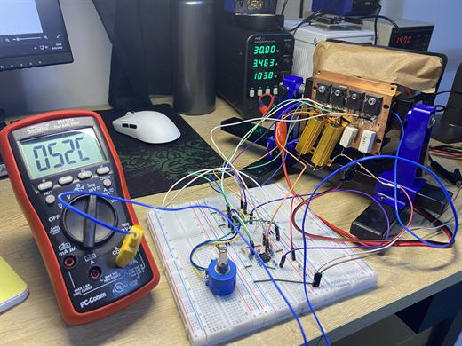
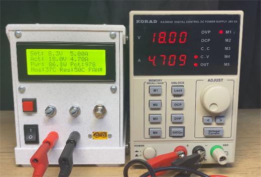
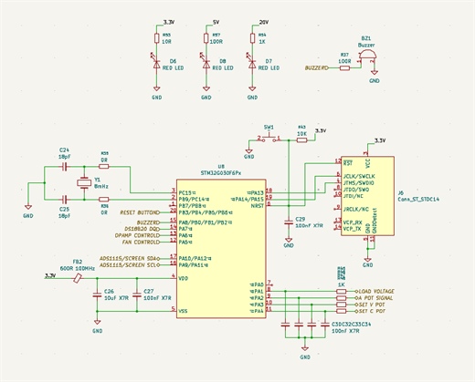
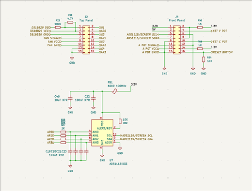
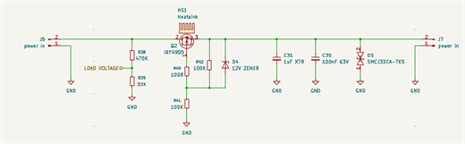
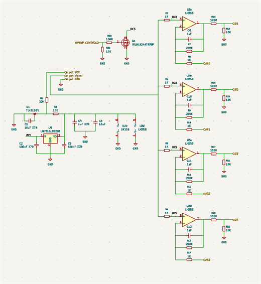
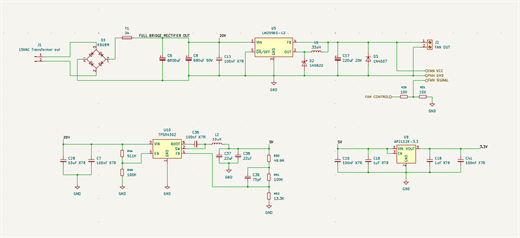
Batarya Sistemleri
10S2P yapida, 42V 5600mAh kapasitede, 18650 Aspilsan hucrelerle olusturulan batarya paketi. 20A BMS ve hucre balanslama uygulandi.
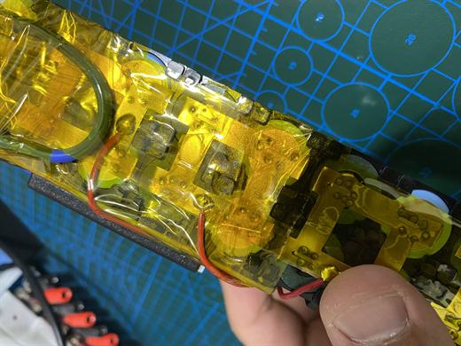
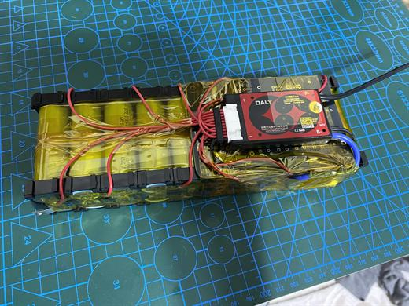
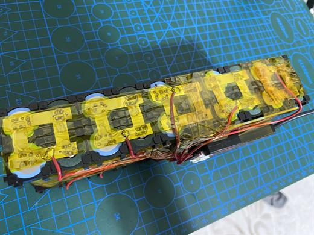
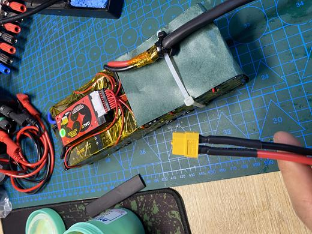
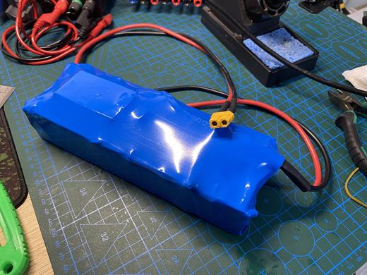
3D Print ve Modifikasyon
3D baski ve mekanik modifikasyonlarla gelistirilen RC araba prototipi. Sasi, govde ve elektronik yerlesim adimlariyla birlikte surus testi videosu site uzerinden izlenebilir.
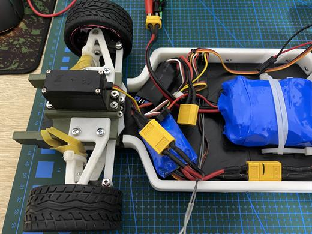
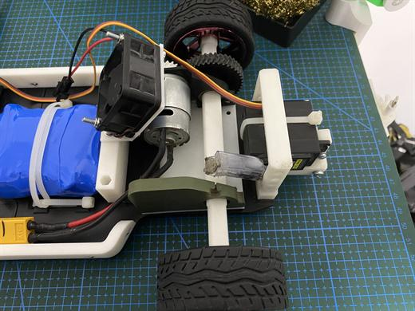
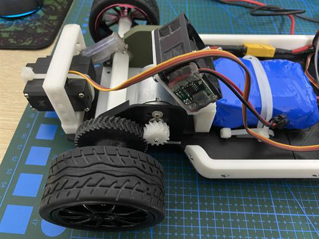
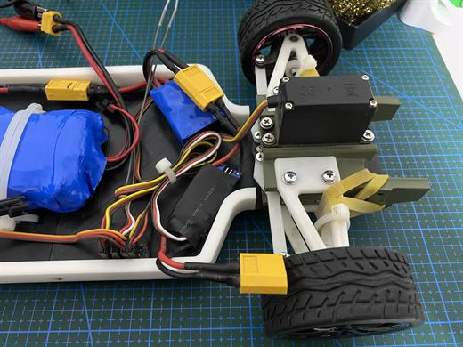
Video acilmazsa YouTube uzerinden izle: RC Car surus videosu
Otomasyon
MZ80 sensor ve Arduino Uno ile baski bittiginde yaziciyi otomatik kapatan sistem. Enerji tasarrufu ve guvenli kapatma icin gelistirildi.
Endustriyel Bakim Onarim Alani (2019 - 2023)
Zerotech kurum ici egitim
Udemy